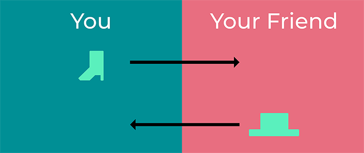
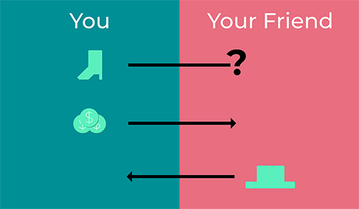

Unless you've just come out of the wilderness after living there your whole life, you've likely used money at some point. Dollars, pounds, yen, it's all the same. Money is something that people have decided holds value. This value has been generated and agreed upon over the course of hundreds of years, and this agreement of value is what is important.
The basic idea of currency is that you can trade it for things that aren't currency. If you make shoes and your friend makes hats, you two can trade each other. This only lasts as long as one of you needs something from the other.

If you need a hat but your friend doesn't need any shoes, your friend has no reason to trade. This is where the money comes in. Instead of trading your shoes and hats directly with each other, you trade with money! Both you and your friend agree on how much money is equal in value to a hat. Once you've both figured that out, you simply give your friend that amount of money, and they give you a nice new hat.

This idea of a physical item to serve as money worked really well for most of human history. Pretty much all transactions were face-to-face. There may have been a middle man involved sometimes, but every single transaction that happened moved physical money from one place to another.
Cryptocurrency is different than real money in the sense that it isn't physical at all. When you own some cryptocurrency, you don't have anything physical to look at or to touch. But you can still use it in the same way that you would use physical money. Say you wanted to buy another pair of shoes from your friend, instead of handing over some physical money for them, you can just send them some cryptocurrency instead. It still holds value, even if you can't touch it.
Bitcoin is the world's most famous cryptocurrency, so let's use that as an example. In order to get 1 Bitcoin, your computer has to solve a series of incredibly difficult math problems. These problems take time to complete and use a lot of computing power in the process.
This difficulty is why Bitcoin has value. It's the same as digging for gold. If you went to a gold mine and started digging, it would take you a long time and a lot of hard work to find some gold. The difficulty also implies scarcity. Since it takes time to get the gold, there's not a lot of it around. This is why most societies decided that stones weren't a very good material to use for money. There's a bunch of stones lying around, and they're not very difficult to find. Everyone could just wander down to the beach and pick up a bunch of stones. Since there would be lots of them around, their value would decrease, meaning that people would need more stones to buy things with. This is called inflation.
The value of cryptocurrency comes from the fact that it's difficult to get.
Let's go back to that math problem we mentioned. Say you had a computer, and you want to make it start mining for Bitcoin. You'd install a piece of software on your computer that connects to the Bitcoin network. Every 30 seconds your computer would be given a problem that it has to solve. If it manages to solve the problem before all the other miners on the network, then it gets a reward. If not, your computer moves onto the next problem.
Not everyone that goes to the gold mine is going to strike gold at the same time. Not everyone that runs the mining software on their computer is going to solve the math problem at the same time. Once the math problem has been solved, the solution is available for everyone to see, and no more cryptocurrency can be won from it.
Mining comes at a cost. First up, you need to purchase the computer hardware to run things on. Although it is possible to run the mining software on pretty much any computer, in order to make a decent amount of money, you're going to need very specific hardware.
There are a lot of different computers you can buy, which are often called mining rigs. These are pre-built computers that are tuned up and ready to start mining. The faster your computer, the more chance you have of solving the math problem first. This is why miners often spend thousands of dollars on their equipment. Graphics cards are especially good at mining cryptocurrencies, and it's not uncommon to see mining rigs with 2, 4, or even 10 graphics cards. This can all add up to make buying a mining rig an incredibly expensive investment.
Another cost is electricity. Computers need electricity to run, and mining computers, in particular, need a consistent stream of electricity to solve math problems. Depending on where you live in the world this can be quite expensive, especially when you consider that mining computers are usually running 24/7.
The final cost is time, and it's not something that many new miners consider. It can take a decent amount of time to set up and maintain your mining computer. Some cryptocurrencies like Bitcoin have pre-made software that helps you get up to speed quickly. But other cryptocurrencies may require a more hands-on approach to setting things up.
The last thing to consider when thinking about mining is that there is a gambling aspect at play. Mining Bitcoin is pretty straight forward. The Bitcoin network is pretty strong and reliable, in the sense that mining on it will generally produce a profit. However that profit can be quite small, and if your hardware and electricity costs are high, it might take you some time to get back the money you initially spent.
On the other end of the spectrum are smaller cryptocurrencies. Miners on these networks are hoping that the value of the currency is going to rise. So they're mining as much as they can now so that they can make a huge profit when the currency increases in value later on down the line.
Miners are an invaluable part of any blockchain network, as the problems they solve are what keeps the whole network running. It can be a solid investment but has a fair share of risks.
Hopefully, now you have a better understanding of what mining is and how miners actually make money. If you're interested in the history of money and where it came from, Extra Credits did an excellent series on The History of Paper Money.